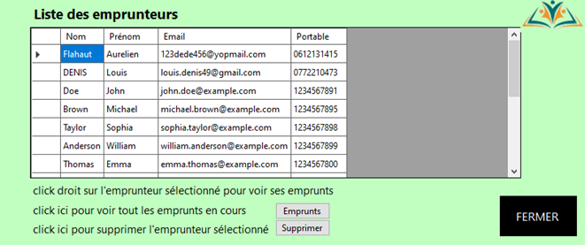

Schéma de la Base de Données

La base de données finale a donc été modifiée jusqu’à obtenir ce résultat:
Un emprunteur possède un nom, un prénom, une date de naissance, un email et un numéro de portable. On peut également savoir si le compte a été validé et le token de validation.
Un emprunt se caractérise par l’identifiant de son emprunteur, de la ressource empruntée et de l’exemplaire ainsi que de la date de l’emprunt, ce à quoi on ajoute également la durée de l’emprunt et une variable prolongement pour indiquer si l’on veut allonger la durée du prêt.
Un exemplaire est caractérisé par l’identifiant de sa ressource ainsi que son propre identifiant, et possède un état et une date de création.
Un commentaire s’identifie par son identifiant propre, celui de son emprunteur et de la ressource, avec un contenu et une date de publication.
Une ressource possède un identifiant, une catégorie et 0 ou un auteur. Elle a un titre, une description, une image de présentation, une année de sortie, une ou plusieurs langues, un ISBN et parfois un lien vers la ressource en ligne.
Un auteur possède uniquement un nom et un prénom.
Fonctionnalités
Page de Connexion
Une page de connexion a été ajoutée pour sécuriser l’accès à l’application par un login et mot de passe hashé avec Bcrypt.

Menu Principal
Une page de menu permet d’accéder aux différentes fonctionnalités de l’application:
- Gestion des ressources et leurs exemplaires
- Gestion des emprunteurs
- Gestion des catégories
- Gestion des demandes de prolongement de prêt
Gestion des Ressources
La partie de gestion des ressources est divisée en 3 menus :
- La liste complète et les informations des ressources
- L’ajout d’une ressource
- La modification des informations d’une ressource
Gestion des Emprunteurs
Le second menu permet de visualiser les informations des emprunteurs, de voir les emprunts de chacun et de supprimer un emprunteur de la base de données avec un message de confirmation.

Gestion des Catégories
Le menu des catégories permet à l’utilisateur d’ajouter une catégorie, de la modifier ou de la supprimer. La suppression est impossible s’il reste des ressources présentes dans cette catégorie.

Gestion des Prolongements de Prêt
Un dernier menu permet à l’utilisateur de gérer les demandes des emprunteurs pour le prolongement de prêt. La page affiche les demandes avec des boutons pour valider ou refuser la demande. En cas de refus, l’utilisateur doit entrer une raison qui s’affichera sur l’interface web de l’utilisateur en question lors de sa prochaine connexion.